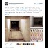

<!DOCTYPE html>
<html lang="en">
 <head>
<!-- Favicon -->
<link rel="shortcut icon" href="../../favicon.ico">
  <meta charset="utf-8"/>
  <title>
   What are the odds of the abandoned subway system under Comet Pizza on Connecticut Ave having similar tile as in the Podesta "artwork"?
  </title>
  <meta content="Post on /v/Pizzagate archived on 2016-12-04 by r0kuro." name="description"/>
  <meta content='What are the odds of the abandoned subway system under Comet Pizza on Connecticut Ave having similar tile as in the Podesta "artwork"?' property="og:title"/>
  <meta content="Post on /v/Pizzagate archived on 2016-12-04 by r0kuro." property="og:description"/>
  <link href="../../static/css/page.css" rel="stylesheet"/>
  <meta content="https://voat.pizzagate.hackliberty.org/thumbnails/6c/50/6c503385-2c5f-4237-88a9-1b75c207c907.jpg" property="og:image"/>
  <meta content="https://voat.pizzagate.hackliberty.org/v/pizzagate/1459773.html" property="og:url"/>
  <meta content="width=device-width, initial-scale=1" name="viewport"/>
  <link href="https://voat.pizzagate.hackliberty.org/1459773.html" rel="canonical"/>
  <meta content="article" property="og:type"/>
  <meta content="Voat /v/Pizzagate Archive" property="og:site_name"/>
  <meta content="en_US" property="og:locale"/>
  <meta content="summary_large_image" name="twitter:card"/>
  <meta content='What are the odds of the abandoned subway system under Comet Pizza on Connecticut Ave having similar tile as in the Podesta "artwork"?' name="twitter:title"/>
  <meta content="Post on /v/Pizzagate archived on 2016-12-04 by r0kuro." name="twitter:description"/>
  <meta content="https://voat.pizzagate.hackliberty.org/thumbnails/6c/50/6c503385-2c5f-4237-88a9-1b75c207c907.jpg" name="twitter:image"/>
 </head>
</html>
<body class="dark">
 <div id="container">
  <!-- array (
  'submissionid' => 1459773,
  'creationDate' => '2016-12-04 04:12:34',
  'domain' => 'sli.mg',
  'formattedContent' => NULL,
  'isAdult' => 0,
  'isAnonymized' => 0,
  'subverse' => 'pizzagate',
  'thumbnail' => '6c503385-2c5f-4237-88a9-1b75c207c907.jpg',
  'title' => 'What are the odds of the abandoned subway system under Comet Pizza on Connecticut Ave having similar tile as in the Podesta "artwork"?',
  'url' => 'https://i.sli.mg/IrNWqf.png',
  'userName' => 'r0kuro',
  'archivedLink' => NULL,
  'archivedDomain' => NULL,
  'isDeleted' => 0,
) -->
  <div style="text-align:center; font-size:24px; font-weight:bold;">
   <a href="../../index.html" style="text-decoration: none; color: inherit;">
    Voat /v/Pizzagate Archive
   </a>
  </div>
  <div class="content" role="main">
   <div class="sitetable linklisting" id="siteTable">
    <div class="submission id-1459773 link type-text" id="submission-1459773">
     <a name="submissionTop">
     </a>
     <p class="parent">
     </p>
     <a class="thumbnail may-blank" href="https://i.sli.mg/IrNWqf.png" target="_self">
      
     </a>
     <div class="entry unvoted">
      <p class="title">
       <a class="title may-blank" href="https://i.sli.mg/IrNWqf.png" tabindex="1" target="_self" title='What are the odds of the abandoned subway system under Comet Pizza on Connecticut Ave having similar tile as in the Podesta "artwork"?'>
        What are the odds of the abandoned subway system under Comet Pizza on Connecticut Ave having similar tile as in the Podesta "artwork"?
       </a>
       <span class="domain">
        (
        <a href="https://archive.searchvoat.co/search.php?d=sli.mg">
         sli.mg
        </a>
        )
       </span>
      </p>
      <p class="tagline">
       submitted
       <time datetime="2016-12-04T04:12:34+00:00" title="12/04/2016 4:12:34 AM">
        2016-12-04T04:12:34
       </time>
       by
       <span class="userattrs">
        <a class="author may-blank" href="https://archive.searchvoat.co/search.php?u=r0kuro">
         r0kuro
        </a>
       </span>
      </p>
      <ul class="flat-list buttons">
       <li class="first">
        <a class="comments may-blank" href="https://archive.searchvoat.co/v/pizzagate/1459773" rel="nofollow">
         3 comments
        </a>
       </li>
      </ul>
      <div class="expando link-expando" style="">
       
       <span class="tagline">
        PNG
        <a class="link-expando-direct" href="https://i.sli.mg/IrNWqf.png" target="_blank">
         Open
        </a>
       </span>
      </div>
     </div>
     <div class="child">
     </div>
     <div class="clearleft">
     </div>
    </div>
    <div class="clearleft">
    </div>
   </div>
   <div class="horizontal-line">
   </div>
   <div class="commentarea">
    <div class="sitetable nestedlisting" id="siteTable">
     <div class="child id-7054626 comment even" style="">
      <div class="entry unvoted">
       <div class="noncollapsed" id="7054626" style=";">
        <p class="tagline">
         <a class="author may-blank" href="https://archive.searchvoat.co/search.php?u=LargePepperoni">
          LargePepperoni
         </a>
         <span class="userattrs">
         </span>
         <time datetime="2016-12-04T05:36:11+00:00" title="12/4/2016 5:36:11 AM">
          2016-12-04T05:36:11
         </time>
        </p>
        <div class="usertext-body may-blank-within" id="commentContent-7054626">
         <div class="md">
          <p>
           <p>
            Just white squares.
           </p>
          </p>
         </div>
        </div>
        <ul class="flat-list buttons">
         <li class="first">
          <a class="bylink" href="https://archive.searchvoat.co/v/pizzagate/1459773/7054626" rel="nofollow">
           link
          </a>
         </li>
        </ul>
       </div>
      </div>
     </div>
     <div class="child id-7054364 comment even" style="">
      <div class="entry unvoted">
       <div class="noncollapsed" id="7054364" style=";">
        <p class="tagline">
         <a class="author may-blank" href="https://archive.searchvoat.co/search.php?u=party1981">
          party1981
         </a>
         <span class="userattrs">
         </span>
         <time datetime="2016-12-04T05:11:47+00:00" title="12/4/2016 5:11:47 AM">
          2016-12-04T05:11:47
         </time>
        </p>
        <div class="usertext-body may-blank-within" id="commentContent-7054364">
         <div class="md">
          <p>
           <p>
            The tile background is white squares. It could be anywhere.
           </p>
          </p>
         </div>
        </div>
        <ul class="flat-list buttons">
         <li class="first">
          <a class="bylink" href="https://archive.searchvoat.co/v/pizzagate/1459773/7054364" rel="nofollow">
           link
          </a>
         </li>
        </ul>
       </div>
      </div>
     </div>
     <div class="child id-7053834 comment even" style="">
      <div class="entry unvoted">
       <div class="noncollapsed" id="7053834" style=";">
        <p class="tagline">
         <a class="author may-blank" href="https://archive.searchvoat.co/search.php?u=pizzathrowaway">
          pizzathrowaway
         </a>
         <span class="userattrs">
         </span>
         <time datetime="2016-12-04T04:26:41+00:00" title="12/4/2016 4:26:41 AM">
          2016-12-04T04:26:41
         </time>
        </p>
        <div class="usertext-body may-blank-within" id="commentContent-7053834">
         <div class="md">
          <p>
           <p>
            There is no "abandoned subway system" "under Comet Pizza" on Connecticut Ave.
           </p>
           <p>
            There is an abandoned streetcar turnaround under Dupont Circle, which is on Connecticut Ave, but the tunnel ends 3.3 miles from Comet Ping Pong, as far as anyone can tell.
            <a href="http://wtop.com/wp-content/uploads/2015/01/DupontUnderground_Map.jpg">
             http://wtop.com/wp-content/uploads/2015/01/DupontUnderground_Map.jpg
            </a>
           </p>
           <p>
            We know that Podesta owns artwork by that artist, but I haven't seen anything indicating that he owns any art with that tile background, have you?
           </p>
          </p>
         </div>
        </div>
        <ul class="flat-list buttons">
         <li class="first">
          <a class="bylink" href="https://archive.searchvoat.co/v/pizzagate/1459773/7053834" rel="nofollow">
           link
          </a>
         </li>
        </ul>
       </div>
      </div>
     </div>
    </div>
   </div>
  </div>
 </div>
<!-- Footer Section -->
<footer class="container-fluid mt-3">
  <p class="small mb-0">
    /v/pizzagate archive has 40446 posts and 683312 total comments.
    <a href="https://git.hackliberty.org/c0mmando/voat-pizzagate-archive/">source code</a>.
  </p>
</footer>

<script src="../../static/js/jquery-3.7.1.slim.min.js"></script>
<script src="../../static/js/comments-toggle.js"></script>

</body>
